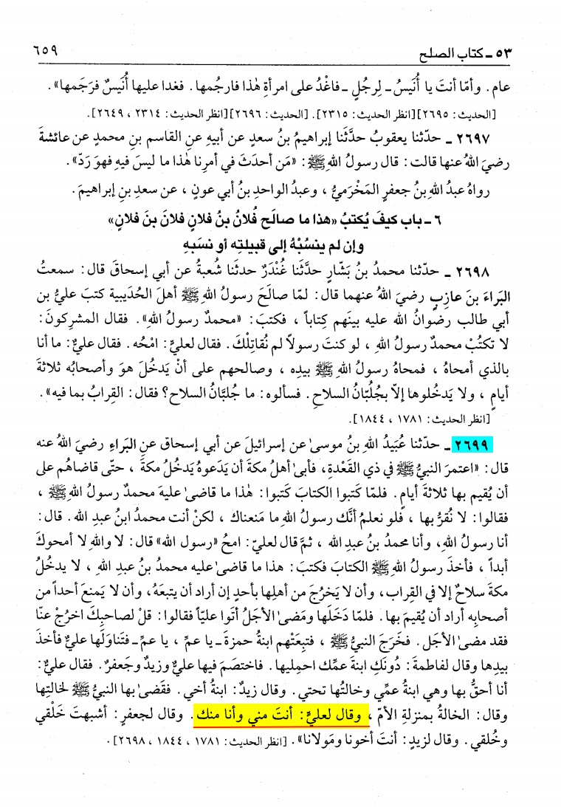
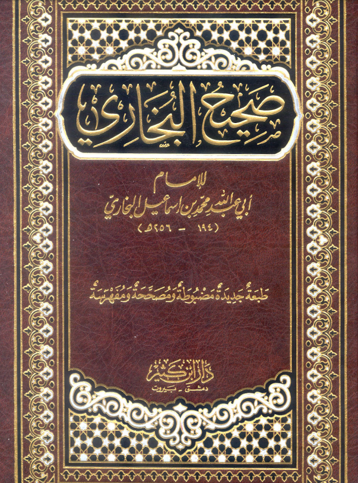
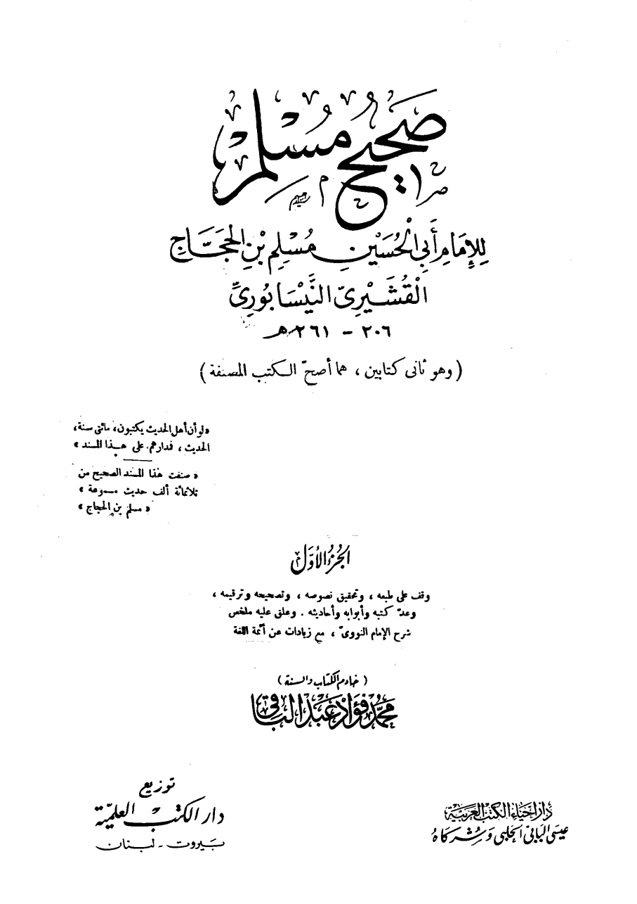
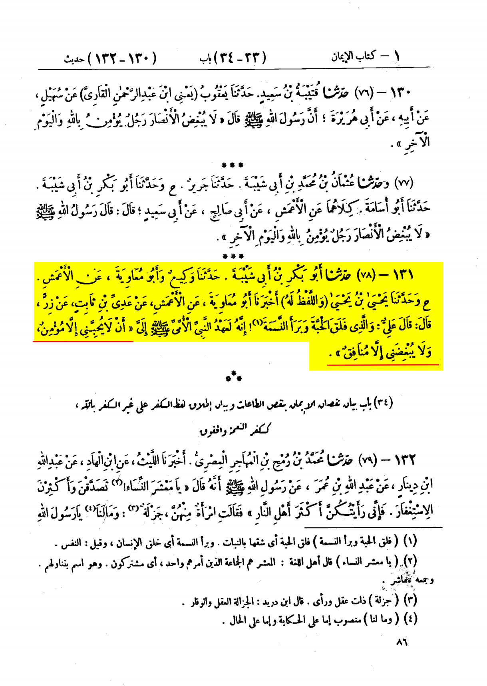

The Prophet (blessings and peace of Allah be upon him) said:
وَقَالَ لِعَلِيٍّ " أَنْتَ مِنِّي وَأَنَا مِنْكَ ".”
“He then said to 'All, "You are from me and I am from you".
Bukahri 2699
Al-Haafiz Ibn Hajar (may Allah have mercy on him) said:
That is, in lineage, relationship by marriage, in seniority (in Islam), in love and in other ways. End quote.
Fath al-Baari volume 7 page 507


Zirr reported:
'Ali observed: By Him Who split up the seed and created something living, the Apostle (may peace and blessings be upon him)
gave me a promise that no one but a believer would love me, and none but a hypocrite would nurse grudge against me.
حَدَّثَنَا أَبُو بَكْرِ بْنُ أَبِي شَيْبَةَ، حَدَّثَنَا وَكِيعٌ، وَأَبُو مُعَاوِيَةَ عَنِ الأَعْمَشِ، ح وَحَدَّثَنَا يَحْيَى بْنُ يَحْيَى، - وَاللَّفْظُ لَهُ -
أَخْبَرَنَا أَبُو مُعَاوِيَةَ، عَنِ الأَعْمَشِ، عَنْ عَدِيِّ بْنِ ثَابِتٍ، عَنْ زِرٍّ، قَالَ قَالَ عَلِيٌّ وَالَّذِي فَلَقَ الْحَبَّةَ وَبَرَأَ النَّسَمَةَ إِنَّهُ
لَعَهْدُ النَّبِيِّ الأُمِّيِّ صلى الله عليه وسلم إِلَىَّ أَنْ لاَ يحبني إلا مؤمن ولا يبغضني إلا منافق